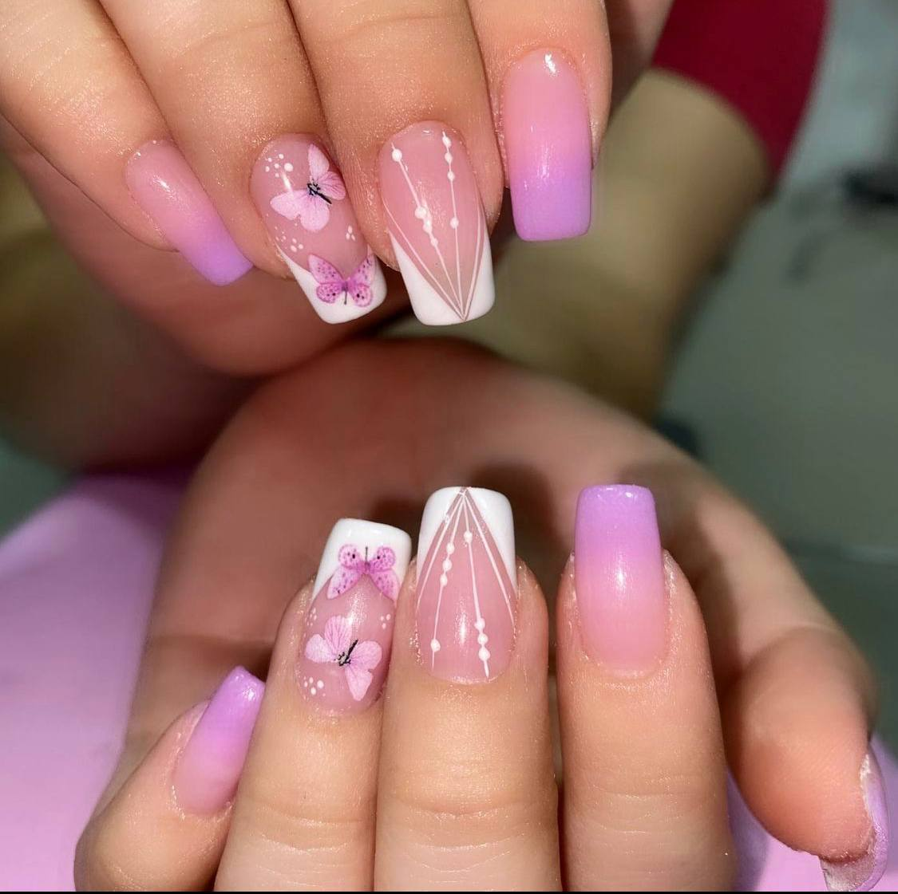
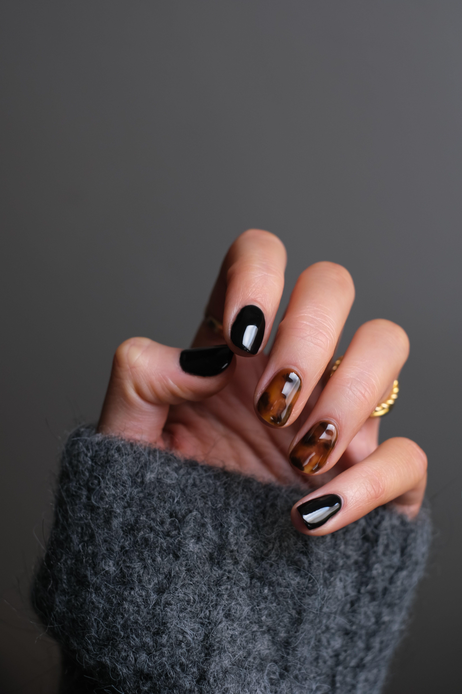

Te invitamos a conocer nuestros servicios:

La manicura semipermanente” es un maquillaje en uñas con esmaltado de larga duración, el cual puede ser aplicado en uñas naturales o artificiales
-de gel o acrílicas-
Se trata de una manicura ideal que permite despreocuparnos de dañar nuestro maquillaje en uñas al hacer diferentes actividades como por ejemplo:
- Recibir golpes -al hacer deportes, por ejemplo- o al tener las manos en remojo mucho tiempo -en la playa, al hacer natación, etc.
Ademas siempre contaras con el beneficio de mantener un maquillaje impecable sin que pierda brillo, y no tener que mantenerla a los pocos días.
Ventajas: duración, brillo y salud de la uñas
Dura hasta 14 días intacta
Fácil de quitar sin limar, con productos a base de acetona
Relación calidad precio excelente
La única desventaja: llevar 14 días el mismo color.
Las uñas acrílicas son una mezcla de polvo y monómero líquido que se combina en una masa, se le da forma a las uñas con un cepillo y luego se seca al aire libre.
En ocasiones, los acrílicos no requieren de una lámpara para secarse y son excelentes para cambiar la forma o extender las uñas; Para terminar, se le da la forma deseada y se endurece el material para agregar fuerza, longitud y grosor a la uña.
La manicura para uñas acrílicas se puede realizar mediante puntas o moldes las cuales se adhieren a la uña.
Ventajas de poner uñas acrílicas
Puedes reconstruir las uñas rotas y mordidas fácilmente para llevarlas siempre perfectas.
Protege las uñas naturales de los efectos dañinos de los esmaltes y otros agentes, solo si lo realizas y retiras correctamente.
El mantenimiento de las uñas acrílicas se realiza cada 15 a 20 días, siempre dependiendo del crecimiento de tu uña. Esto las hace una opción muy duradera.
Las uñas acrílicas son muy resistentes y evitan la rotura de las uñas, por lo que son perfectas para mujeres con uñas débiles o con tendencia a romperse.
Estéticamente este tipo de uñas son más bonitas que las naturales y se les puede dar cualquier forma y longitud, sin olvidar las infinitas posibilidades de decoración
Desventajas de poner uñas acrílicas
A pesar de sus ventajas, también ten en cuenta las desventajas de las uñas acrílicas, las cuales están enfocadas a incentivar el buen uso y mantenimiento del manicure que hagas en tus manos.
Algunas de ellas son:
Abusar del uso de las uñas acrílicas puede afectar el crecimiento de la uña natural. Muchos expertos recomiendan otorgar descansos de una a dos semanas para volver a poner las uñas postizas.
Un mal manejo de las uñas acrílicas puede provocar infecciones, por lo que es importante contar con el cuidado y mantener una adecuada higiene en el centro donde te realices las uñas.
Quitar las uñas acrílicas requiere una buena técnica para no dañar las uñas naturales o causar lesiones. Como siempre es importante que lo haga un buen profesional.
Algunos de los productos químicos utilizados en el proceso para hacer las uñas acrílicas tienen mal olor y pueden ser perjudiciales para la salud, sobre todo cuando se está en sobreexposición. El lugar donde te haces las uñas debe estar bien ventilado.
 Aunque las uñas de gel y acrílicas pueden proporcionar resultados similares, existen diferencias clave con cada estilo de uñas. Las uñas en gel por lo general consisten en cepillar capas de esmalte en las uñas naturales y se curan con una lámpara UV. Una vez completadas, estas suelen durar alrededor de 14 días sin astillarse, hacia el final de este período, estas comenzarán a pelarse o levantarse en las esquinas.